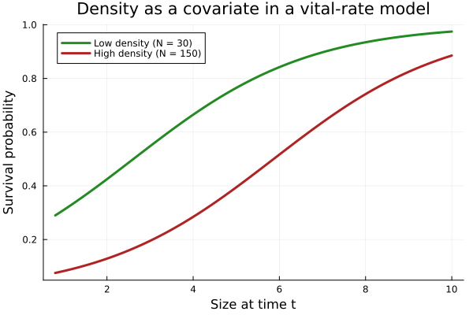
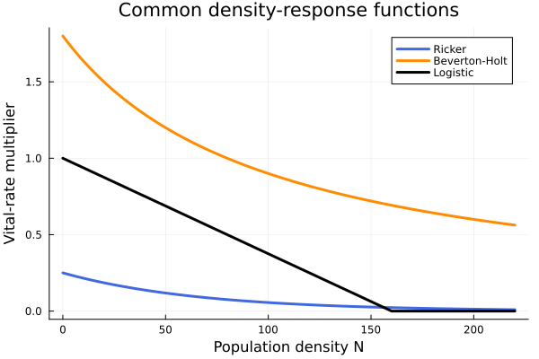
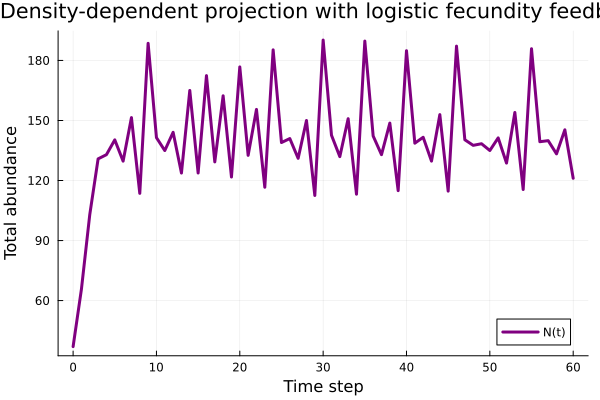

Overview
Vital rates often depend not just on individual state, but also on population density. Competition for light, nutrients, pollinators, or safe sites can reduce survival and especially fecundity as abundance increases. In IPMs this is naturally handled by adding density as a covariate to the vital-rate regressions; in MPMs we often use explicit density-response functions.
This vignette shows both perspectives.
Setup
using VitalRateModels, DataFrames, StatsModels, Distributions, Plots
using Random
using StructuredPopulationCore: lambda
matrixpm_available = false
try
@eval using MatrixProjectionModels
matrixpm_available = true
catch
struct RickerDensity
α::Float64
β::Float64
end
RickerDensity(; α, β) = RickerDensity(α, β)
(f::RickerDensity)(N) = f.α * exp(-f.β * N)
struct BevertonHoltDensity
α::Float64
β::Float64
end
BevertonHoltDensity(; α, β) = BevertonHoltDensity(α, β)
(f::BevertonHoltDensity)(N) = f.α / (1 + f.β * N)
struct LogisticDensity
r::Float64
K::Float64
end
LogisticDensity(; r, K) = LogisticDensity(r, K)
(f::LogisticDensity)(N) = max(0.0, f.r * (1 - N / f.K))
struct ConstantDensity end
(f::ConstantDensity)(N) = 1.0
struct DensityVitalRateSpec{S, F}
survival::S
fecundity::F
end
DensityVitalRateSpec(; survival, fecundity) = DensityVitalRateSpec(survival, fecundity)
struct DensityDependent end
struct DirectIteration end
struct MPMProblem{F, V, T}
f::F
n0::V
tspan::T
end
MPMProblem(::DensityDependent, f, n0, tspan) = MPMProblem(f, n0, tspan)
function apply_density(spec::DensityVitalRateSpec, U, F, N)
U_dd = spec.survival(N) .* U
F_dd = spec.fecundity(N) .* F
return U_dd, F_dd
end
end
struct SimpleSolution{T}
u::Vector{T}
end
function project_density(f, n0, tspan)
t0, t1 = tspan
states = [copy(n0)]
n = copy(n0)
for t in (t0 + 1):t1
n = f(n, nothing, t - 1) * n
push!(states, copy(n))
end
SimpleSolution(states)
end
apply_density_local(spec, U, F, N) = (spec.survival(N) .* U, spec.fecundity(N) .* F)
Random.seed!(2031)Random.TaskLocalRNG()Fitting density-dependent vital rates from data
We simulate field data where individual survival depends on both size and local density.
n = 500
size_t = clamp.(rand(Normal(5.0, 1.4), n), 0.8, 10.0)
density_t = rand(20.0:2.0:180.0, n)
surv_logit = @. -0.8 + 0.45 * size_t - 0.012 * density_t
surv_prob = @. 1 / (1 + exp(-surv_logit))
survived = rand.(Bernoulli.(surv_prob)) .== 1
data = DataFrame(size_t=size_t, density_t=density_t, survived=survived)
survival_fit = fit_vital_rate(
SurvivalModel,
data,
@formula(survived ~ size_t + density_t),
)
println("Density-dependent survival AIC = ", round(survival_fit.aic, digits=2))Density-dependent survival AIC = 612.55To visualize the fitted response we predict across size at low and high density.
size_domain = collect(range(0.8, 10.0; length=150))
low_density = DataFrame(size_t=size_domain, density_t=fill(30.0, length(size_domain)))
high_density = DataFrame(size_t=size_domain, density_t=fill(150.0, length(size_domain)))
surv_low = predict_vital_rate(survival_fit, low_density)
surv_high = predict_vital_rate(survival_fit, high_density)
p = plot(
size_domain,
surv_low,
linewidth=3,
color=:forestgreen,
label="Low density (N = 30)",
xlabel="Size at time t",
ylabel="Survival probability",
title="Density as a covariate in a vital-rate model",
)
plot!(p, size_domain, surv_high, linewidth=3, color=:firebrick, label="High density (N = 150)")
p
Standard density-response functions
MatrixProjectionModels.jl also provides reusable density modifiers for matrix or kernel elements.
N = collect(0.0:2.0:220.0)
ricker = RickerDensity(α=0.25, β=0.015).(N)
beverton = BevertonHoltDensity(α=1.8, β=0.01).(N)
logistic = LogisticDensity(r=1.0, K=160.0).(N)
p = plot(
N,
ricker,
linewidth=3,
label="Ricker",
xlabel="Population density N",
ylabel="Vital-rate multiplier",
title="Common density-response functions",
color=:royalblue,
)
plot!(p, N, beverton, linewidth=3, label="Beverton-Holt", color=:darkorange)
plot!(p, N, logistic, linewidth=3, label="Logistic", color=:black)
p
These correspond to different ecological assumptions:
- Ricker: strong overcompensatory suppression at high density,
- Beverton-Holt: smooth contest competition, and
- logistic: linear decline to zero at carrying capacity.
Using DensityVitalRateSpec
We now construct a simple 2-stage MPM and let fecundity decline logistically with total abundance.
U = [0.20 0.00
0.55 0.75]
F = [0.00 4.20
0.00 0.00]
spec = DensityVitalRateSpec(
survival=ConstantDensity(),
fecundity=LogisticDensity(r=1.0, K=150.0),
)
function dd_matrix(n, p, t)
N = sum(n)
U_dd, F_dd = apply_density_local(spec, U, F, N)
U_dd + F_dd
enddd_matrix (generic function with 1 method)Projecting with density feedback
n0 = [25.0, 12.0]
sol = project_density(dd_matrix, n0, (0, 60))
total_abundance = [sum(u) for u in sol.u]
A_eq = dd_matrix(sol.u[end], nothing, 0)
println("Final abundance ≈ ", round(total_abundance[end], digits=2))
println("λ at final abundance = ", round(lambda(A_eq), digits=4))Final abundance ≈ 121.11
λ at final abundance = 1.1965p = plot(
0:60,
total_abundance,
linewidth=3,
xlabel="Time step",
ylabel="Total abundance",
title="Density-dependent projection with logistic fecundity feedback",
label="N(t)",
color=:purple,
)
p
The trajectory rises when the population is rare, then levels off near the carrying-capacity scale implied by the logistic response. This is the demographic version of the familiar density-feedback picture from classical population ecology.
Summary
In this vignette we:
- fit a survival model with density as a GLM covariate,
- plotted Ricker, Beverton-Holt, and logistic density responses,
- encoded those responses with
DensityVitalRateSpec, and - projected a simple density-dependent MPM with feedback.
Exactly the same logic can be used when fitted IPM vital rates are updated at each time step using current abundance or neighborhood density.
References
- Caswell, H. (2001). Matrix Population Models. Sinauer.
- Ellner, S. P., Childs, D. Z., & Rees, M. (2016). Data-Driven Modelling of Structured Populations. Springer.
- May, R. M. (1976). Simple mathematical models with very complicated dynamics. Nature, 261, 459-467.